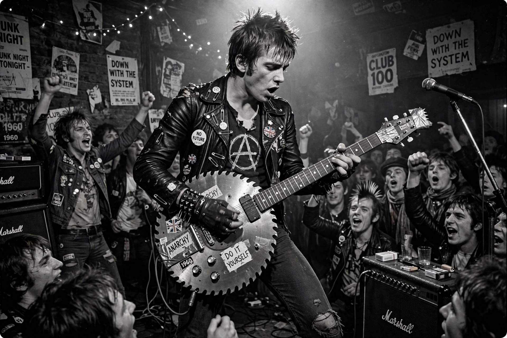

From Wikipedia, the free encyclopedia
| Pete Shelley | |
|---|---|
| Birth name | Peter Campbell McNeish |
| Born | 17 April 1955, Leigh, Lancashire, England |
| Died | 6 December 2018 (aged 63), Tallinn, Estonia |
| Occupation | Singer, songwriter, guitarist |
| Known for | Frontman of Buzzcocks; "Ever Fallen in Love (With Someone You Shouldn't've)" |
Pete Shelley (born Peter Campbell McNeish, 17 April 1955 – 6 December 2018) was an English singer, songwriter and guitarist. He formed the punk band Buzzcocks with Howard Devoto in Bolton in 1976 after the two travelled to London to see the Sex Pistols, and became the band's principal songwriter and frontman after Devoto's departure in 1977.
Buzzcocks were pioneers of the independent label movement: their self-released debut EP Spiral Scratch (1977) was one of the first punk records issued on an independent label. Signing to United Artists, Shelley wrote a string of classic singles blending buzzsaw guitars with yearning, ambivalent love songs — "What Do I Get?", "I Don't Mind", "Ever Fallen in Love (With Someone You Shouldn't've)" (1978), "Everybody's Happy Nowadays", and "Harmony in My Head" — compiled on the acclaimed Singles Going Steady (1979).
After Buzzcocks split in 1981, Shelley pursued a solo career in electronic pop, scoring a hit with "Homosapien" (1981) and releasing the album XL1 (1983), which included a computer program for the ZX Spectrum. He also wrote the theme music for the BBC's Tour de France coverage. Buzzcocks re-formed in 1989 and toured and recorded for the rest of his life. Shelley, who was openly bisexual and wrote gender-unspecific lyrics, died of a suspected heart attack in Tallinn, Estonia, where he had lived since 2012.
Shelley's melodic, three-minute pop-punk songwriting made him a formative influence on indie rock and pop punk; "Ever Fallen in Love" has been widely covered, including a 1987 hit version by Fine Young Cannibals.
Buzzcocks · Punk rock · Howard Devoto
